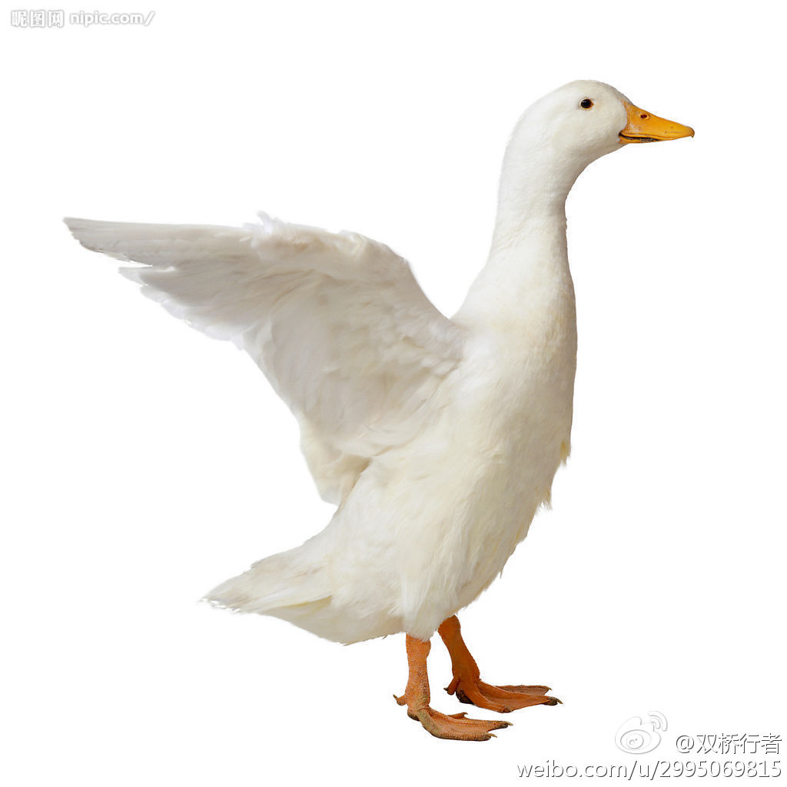

今天在武汉，晚餐时听一投资人说现在投资方向转向农业，投了养鸭场。湖北鸭子分类多，有肉鸭，蛋鸭，肉鸭还分煲汤和卤味。集约化饲养38天鸭子就可以宰杀了。//@安普若-安校长:我以前在中西部的时候，很多美国人螃蟹不吃，龙虾不吃，只吃牛排和土豆。
@双桥行者:
美国人为什么不吃鸭子？ 美国网民曾在网上讨论过这个问题。原因之一是觉得鸭子太油（it's too greasy）。个个都“丰臀肥乳”。美国人固然肉吃得多，但对油腻的肉还是十分戒备的。 原因之二是觉得鸭子很可爱（very cute）。鸭子的嘴巴看起来笑容可掬。美国人太喜爱曾经风靡美国的卡通片中的唐老鸭了。
- 